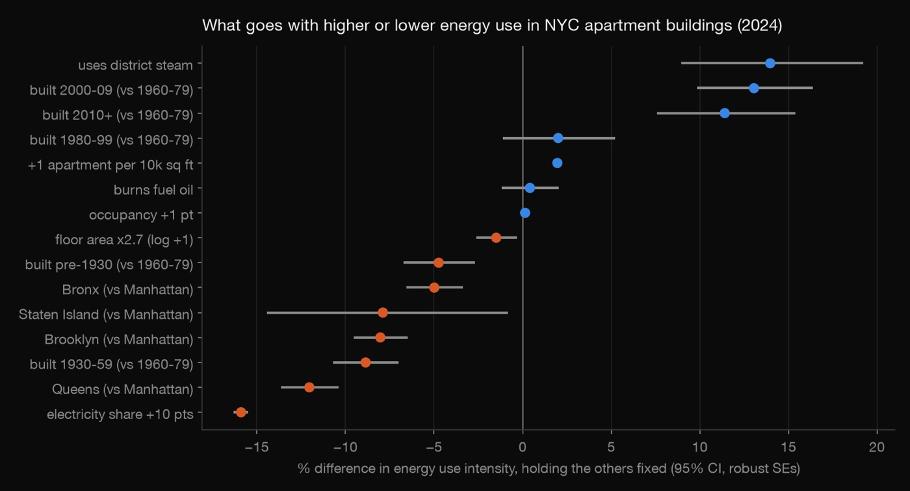
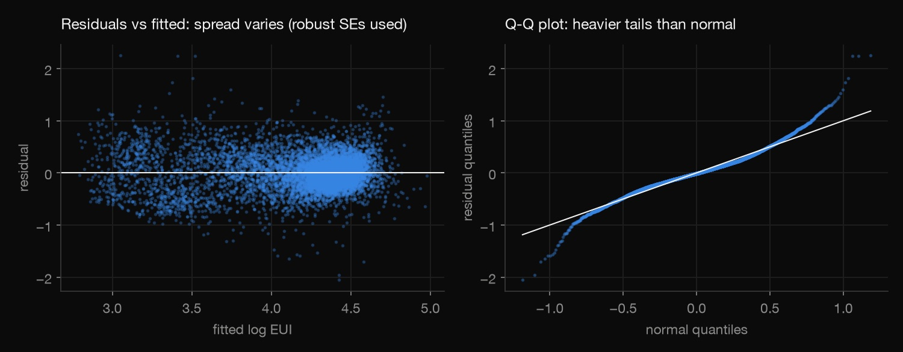
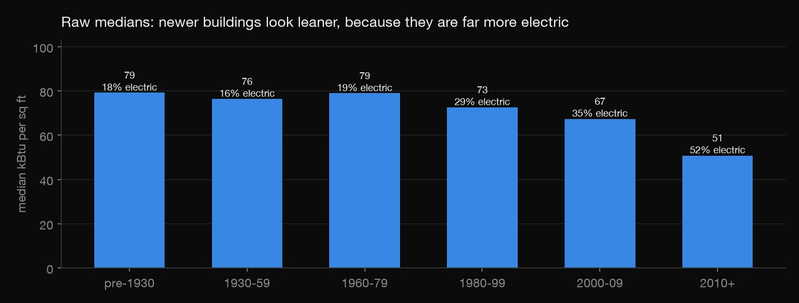
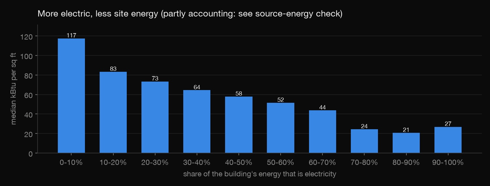
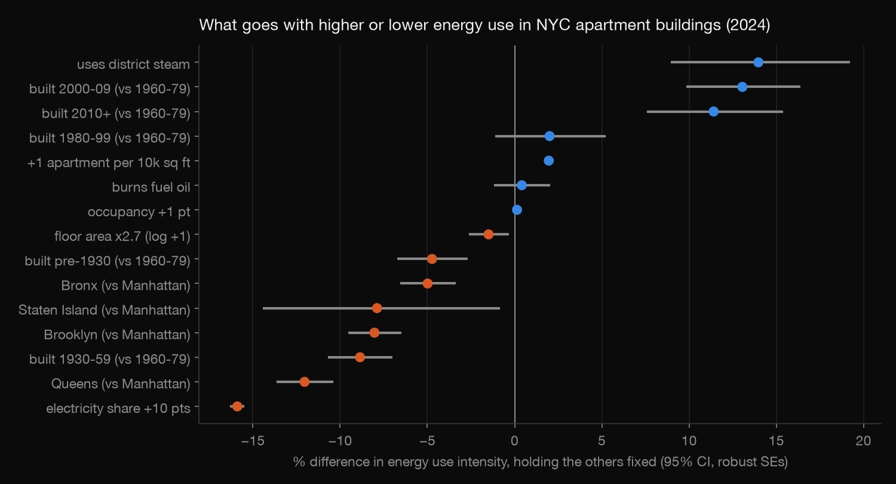

Python · Regression · 2026-10
NYC Building Energy
What drives energy use in 10,490 New York apartment buildings? A regression on the city's 2024 energy reports, with full diagnostics and a lesson in confounding.

Associations from one year of self-reported data, not causes: buildings that electrified may differ in ways the data doesn't record. No Local Law 97 compliance calculation is attempted.
01 — The problem
New York's Local Law 97 caps building emissions from 2024, with fines for buildings over the limit. Owners and the city both need to know which buildings use the most energy for their size, and why. Holding size, age, location and fuel mix fixed, what goes with higher or lower energy use in apartment buildings?
02 — What I built
A multiple regression on the city's Local Law 84 energy reports for 2024 (NYC Open Data, 39,090 properties):
- A documented cleaning funnel from 39,090 reports to 10,491 trustworthy apartment buildings, with every rule counted.
- An OLS model of log energy use per square foot, so effects read as percentages, with robust standard errors.
- Full diagnostics: residual plots, Breusch–Pagan, VIF, Cook's distance, a Huber robust refit and 10-fold cross-validation.
- Robustness and confounding checks, and
check.py, which refits the model independently.
03 — How it was built
- 01
Get the reports
Every NYC building over 25,000 sq ft must report its yearly energy use. The city publishes the reports on NYC Open Data.
download.pypulls the 2024 reports through the Socrata API, selecting 33 columns rather than the full table.q = urllib.parse.urlencode({"$select": ",".join(COLS), "$where": "report_year=2024", "$limit": 60000}) - 02
Clean with rules you can count
Each rule is written down and its removals are counted. Dropped along the way: 230 "Test" and 3 "Design" records; campus members, which are reported again under their parent; EUI outside 10–500 kBtu/sq ft (values up to 11.7 million exist); and reports with estimated or default values or data-quality alerts.
Rule Left All 2024 reports 39,090 Existing buildings 38,857 Standalone properties 26,989 Multifamily housing 18,427 Weather-normalised EUI 16,867 EUI 10–500 kBtu/sq ft 16,720 At least 25,000 sq ft 16,547 Built 1800–2024 16,545 No estimated/default values 10,508 Electricity share reported 10,491 The estimated-value rule removes the most buildings, so step 5 refits the model with those buildings kept.
(f"EUI in a physically plausible range ({eui_range[0]}-{eui_range[1]} kBtu/sq ft)", d["weather_normalized_site_eui"].between(*eui_range)), - 03
Fit the model and test its assumptions
The outcome is the log of energy use per square foot, so each coefficient reads as a percentage difference. Predictors are size, construction era, electricity share, district steam, fuel oil, borough, occupancy and apartment density. The model explains 59% of the variation, and 58.8% on held-out folds (size alone: 0.2%). The residual spread isn't constant (Breusch–Pagan p < 0.001), so standard errors are heteroskedasticity-robust (HC3). The Q-Q plot shows heavier tails than normal, but a Huber robust regression moves no coefficient by more than 0.06. The largest VIF is 3.5, so collinearity is not a problem.

robust = ols.get_robustcov_results(cov_type="HC3") - 04
Catch the confounder
On raw medians, buildings from 2010 or later use 36% less energy per square foot than 1960–79 buildings (51 vs 79). But they are far more electric: the median electricity share is 52% against 19%, and electricity counts at face value on site. With electricity share in the model, the gap flips to 9% more (11% in the full model). Comparing eras without the fuel mix gives the wrong answer.

"built_2010_plus_with_electric_share": pct(smf.ols("log_eui ~ C(era, Treatment('1960-79')) + electric_share", f).fit())} - 05
Stress-test it, then check it independently
The headline effects are refit with the flagged buildings kept, and again on source energy, which charges grid electricity for power-plant losses. On source energy the electricity effect halves (−7.3% per 10 points), so part of it is accounting, but it stays negative. Steam and newer construction stay positive in every version.
check.pyre-applies the cleaning rules and refits the model with plain NumPy least squares. It then confirms the electricity, steam and 2010+ coefficients match to 0.0001 and the signs hold in all three versions.
beta, *_ = np.linalg.lstsq(X.values, f["log_eui"].values, rcond=None)
04 — Results

| Holding the others fixed | Effect |
|---|---|
| Electricity share +10 pts | −15.9% |
| Uses district steam | +14.0% |
| Built 2000–09 | +13.1% |
| Built 2010+ | +11.4% |
| Built before 1930 | −4.7% |
| Built 1930–59 | −8.9% |
| Queens | −12.0% |
| Brooklyn | −8.0% |
| Bronx | −5.0% |
| Burns fuel oil | +0.4% (n.s.) |
Effects are on energy use per square foot. Eras are compared with 1960–79 and boroughs with Manhattan; n.s. = not statistically significant.
The same effects in each robustness version. Main is the clean set on site energy. +Flagged keeps the estimated/default-value buildings. Source uses source energy. Electricity is per +10 points.
| Main | +Flagged | Source | |
|---|---|---|---|
| n | 10,490 | 16,505 | 10,490 |
| Electricity | −15.9% | −14.9% | −7.3% |
| Steam | +14.0% | +12.4% | +21.5% |
| Built 2010+ | +11.4% | +11.7% | +13.0% |
Offices are much harder to explain (n = 1,032, R² 0.23, cross-validated 0.19).
The lesson: a raw comparison can point the wrong way when a third variable, here the fuel mix, differs between the groups.
05 — What I'd do next
- A panel of 2022–2024 reports, to see changes within the same building after it electrifies.
- A Local Law 97 screen using the law's own emission factors.
- Map the residuals: which buildings use far more than the model expects for their type are retrofit leads.